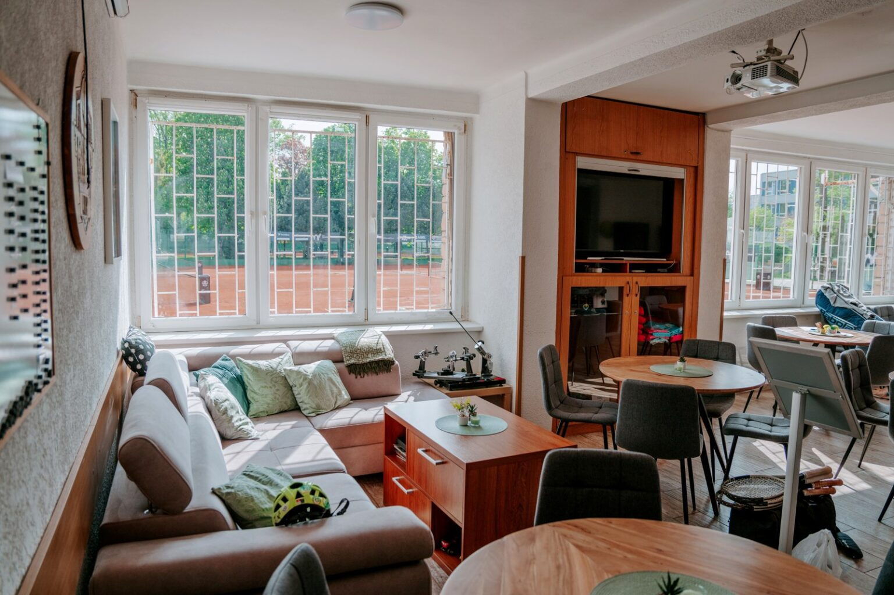
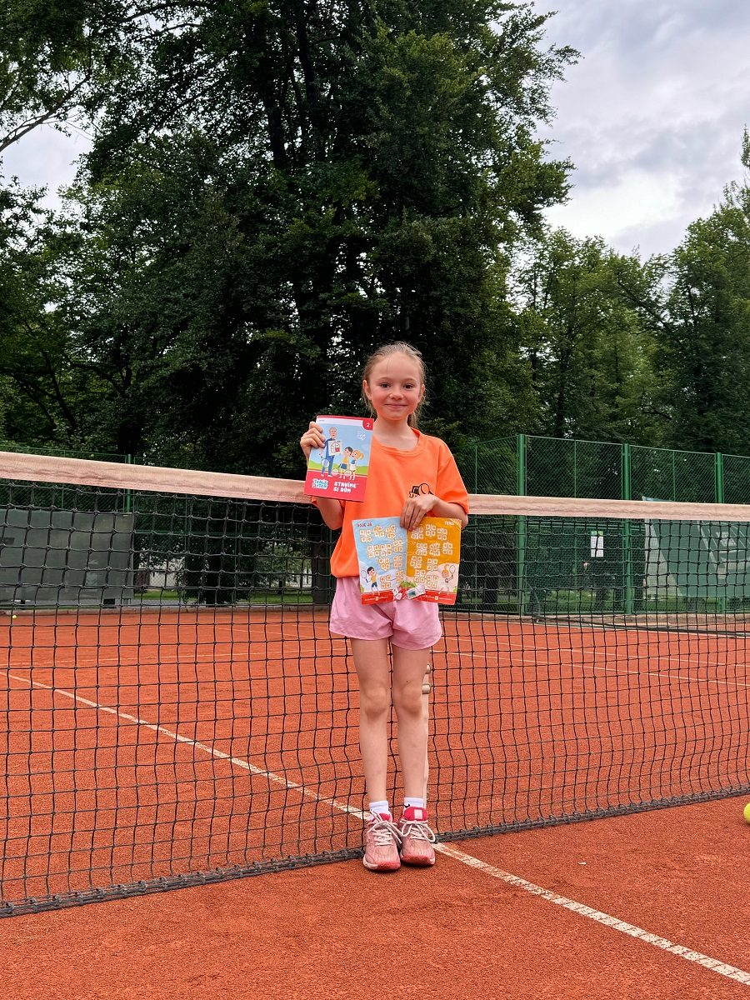
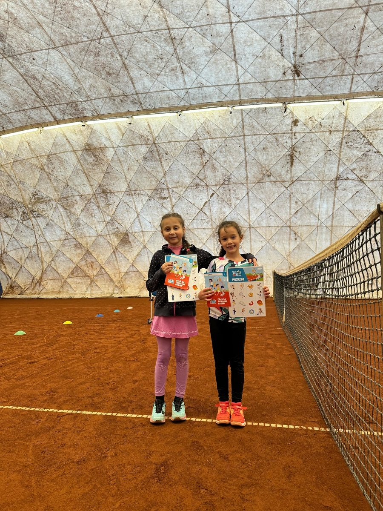

Zimní sezona: nafukovací hala nad antukou
Nafukovací hala nad antukou se staví v říjnu, letos byla na programu v sobotu 10. 10. Hrajeme i v zimě — v pevné i nafukovací hale.
Rezervovat haluTenisový klub Louny · Masarykovy sady
Šest antukových dvorců, hala po celý rok, první padel v Lounech a nově Tenisová akademie. Pojďte se k nám přidat, nebo si jen zahrát.
Rezervace online v Roger Online, nebo telefonem 604 475 338

Nafukovací hala nad antukou se staví v říjnu, letos byla na programu v sobotu 10. 10. Hrajeme i v zimě — v pevné i nafukovací hale.
Rezervovat haluDěkujeme všem hráčům, rodičům i fanouškům. Venkovní antuka odpočívá, v hale se hraje dál.
Pod naším klubem a se záštitou SeTeS vzniklo přípravné středisko pro děti 8–15 let z celého Ústeckého kraje.
O akademiiDva zářijové víkendy na našich dvorcích — 12. 9. singly, 19. 9. debly.
Areál leží v Masarykových sadech hned vedle koupaliště. Antuka, dvě haly na zimu, padel, klubovna s barem a kamny a nové šatny se sprchami.





Kurt si zarezervujete online v Roger Online, nebo telefonem na čísle 604 475 338.
Tenisový klub Louny
Kč za hodinu · sezona 2026
letní sezona · Po–Ne 9:00–20:00
antuka · Po–Ne
Ceník má provozovatel Padelmaniacs na svém webu. Platí karta MultiSport, studenti mají slevu 10 % (Po–Pá do 16:00).
nebo telefonem 604 475 338
Tenisový klub Louny, z.s.
roční příspěvky 2026
Příspěvek se platí převodem na účet klubu, do poznámky uveďte jméno člena.
Členové klubu platí v hale o 100 Kč za hodinu méně.
Pro srovnání: roku 1931 platil člen nad 14 let 140 Kč.
Kontakt pro členy: Vojtěch Vágner, 723 232 878


Kurt se sklem stojí přímo v areálu TK Louny. Otevřeli jsme ho v sobotu 18. 4. 2026, provozuje ho Padelmaniacs Louny.
Klub je zapojený do programu Tenis dětem podle metodiky ČTS. Děti trénují formou hry, sbírají odznáčky a postupují do vyšších úrovní.
Cílem je všestrannost, obratnost a radost z pohybu. Děti hrají soutěže ve všech kategoriích:
„Přijďte se k nám podívat — tenis může bavit i vaše dítě.“






Šéftrenér mládeže a dorostu
Trenér 1. třídy, bývalý hráč 1. a 2. ligy. V mládežnických kategoriích se držel do 10. místa v Československu.
+420 603 594 458
Trenér rekreačních hráčů
Licence ČTS — trenér 1. třídy (1992). V mládeži 11. místo celostátního žebříčku (1976), ligu družstev hrál za CHZ Litvínov, Slavii VŠ Praha a Slavoj Vyšehrad. Trénoval TJ Lokomotiva Louny, v letech 1992–2001 v Bavorsku, v TK Louny je od roku 2004.
+420 604 757 037V sezoně 2026 hrálo áčko 1. ligu. Za klub nastupuje devět družstev — od babytenisu po dospělé.
PDFRozpis mistrovských utkání 2026Všechna družstva, termíny a soupeřiZávodní tenis a členové: Vojtěch Vágner, 723 232 878

V sezoně 2026 hrálo áčko 1. ligu ve skupině s LTK Liberec.
10.–17. 5. 2026 se na venkovní antuce TK Louny hrál mezinárodní turnaj mužů ITF World Tennis Tour. Poprvé v historii klubu.

Dvouhra · vítěz
Filip Cristian Jianu ROU
nasazený č. 1 · finále proti Lilianu Marmousezovi (Francie)
3–66–26–4
Čtyřhra · vítězové
Michal Krajči SVK
Andrij Porickyj UKR
Nejlepší Čech
Jakub Nicod
došel do semifinále
„Naším cílem je přinést do regionu špičkový tenis, podpořit mladé hráče a zároveň nabídnout veřejnosti atraktivní sportovní zážitek. Věříme, že se Louny stanou novou tradiční zastávkou na mapě ITF World Tennis Tour.“
Na další ročník se už chystáme.
Stanovy lounského tenisového klubu byly schváleny 26. 10. 1927. Dnešní dvorce otevřel roku 1930 mistr světa Karel Koželuh exhibicí se slavným hercem a výborným tenistou Vlastou Burianem.
1. Lawn tenisový klub · Louny
VstupenkaOtevření dvorců
exhibice
Karel Koželuhmistr světa
×Vlasta Burianherec a výborný tenista
Masarykovy sady · LounyRoku 1930
Kontrolní ústřižek
1930
Č. 0001
26. 10. 1927 byly schváleny stanovy lounského tenisového klubu, registrace 14. 11. 1927. První dvorce stály v místě dnešního dětského hřiště v Masarykových sadech.
22. 3. 1928 byl prvním předsedou zvolen Josef Jirásek, majitel mlýnů.
Otevřela je exhibice Karla Koželuha s Vlastou Burianem. Koželuh se 15. 8. 1930 stal čestným členem klubu.
Člen nad 14 let platil 140 Kč, do 14 let 40 Kč, host 50 Kč na měsíc.
3. 1. 1932 se v hotelu Union 1. Lawn tenisový klub sloučil s veslařským klubem VK Ohře. Tenisový odbor vedl Dr. Bohumil Havránek.
V letech 1938–1941 klub prosperoval: 81, 57, 78 a 53 členů.
Za komunismu byl klub součástí TJ Lokomotiva Louny. Předseda MUDr. Lubor Singer prosadil novou klubovnu a tenisovou halu.
Osamostatnění jako Tenisový klub 91 Louny.
Areál se rozrostl o dva nové dvorce.
Rekonstrukce klubovny.
Renovace kurtů 1–3 s podporou MŠMT.
První padelový kurt (18. 4.), první mezinárodní turnaj ITF M25 Louny Open (květen) a start Tenisové akademie Louny (1. 10.).
Blíží se sto let tenisu v Lounech.